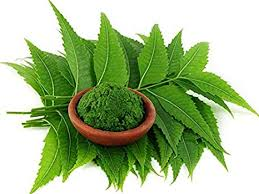

NEEM and its PRODUCTS

Neem is a tree. The bark, leaves, and seeds are used to make medicine. Less frequently, the root, flower, and fruit are also used.
Neem leaf is used for leprosy, eye disorders, bloody nose, intestinal worms, stomach upset, loss of appetite, skin ulcers, diseases of the heart and blood vessels (cardiovascular disease), fever, diabetes, gum disease (gingivitis), and liver problems. The leaf is also used for birth control and to cause abortions.
The bark is used for malaria, stomach and intestinal ulcers, skin diseases, pain, and fever.
The flower is used for reducing bile, controlling phlegm, and treating intestinal worms.The fruit is used for hemorrhoids, intestinal worms, urinary tract disorders, bloody nose, phlegm, eye disorders, diabetes, wounds, and leprosy.
Neem twigs are used for cough, asthma, hemorrhoids, intestinal worms, low sperm levels, urinary disorders, and diabetes. People in the tropics sometimes chew neem twigs instead of using toothbrushes, but this can cause illness; neem twigs are often contaminated with fungi within 2 weeks of harvest and should be avoided.
The seed and seed oil are used for leprosy and intestinal worms. They are also used for birth control and to cause abortions.
The stem, root bark, and fruit are used as a tonic and astringent. Some people apply neem directly to the skin to treat head lice, skin diseases, wounds, and skin ulcers; as a mosquito repellent; and as a skin softener.
Inside the vagina, neem is used for birth control.
Neem is also used as an insecticide.
The products available are neem oil, neem soap and neem facewash.